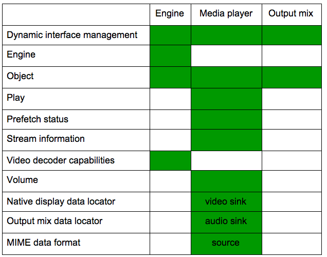

OpenMAX AL is a companion API to OpenSL ES, but for multimedia (video and audio) rather than audio only.
Android 4.0 provides a direct, efficient path for low-level streaming multimedia. The new path is ideal for applications that need to maintain complete control over media data before passing it to the platform for presentation. For example, media applications can now retrieve data from any source, apply proprietary encryption/decryption, and then send the data to the platform for display.
Applications can now send processed data to the platform as a multiplexed stream of audio/video content in MPEG-2 transport stream format. The platform de-muxes, decodes, and renders the content. The audio track is rendered to the active audio device, while the video track is rendered to either a Surface or a SurfaceTexture. When rendering to a SurfaceTexture, the application can apply subsequent graphics effects to each frame using OpenGL.
OpenMAX AL provides a C language interface that is also callable from C++, and exposes features similar to these Android APIs callable from Java programming language code:
As with all of the Android Native Development Kit (NDK), the primary purpose of OpenMAX AL for Android is to facilitate the implementation of shared libraries to be called from Java programming language code via Java Native Interface (JNI). NDK is not intended for writing pure C/C++ applications.Note: though based on OpenMAX AL, the Android native multimedia API is not a conforming implementation of either OpenMAX AL 1.0.1 profile (media player or media player / recorder). This is because Android does not implement all of the features required by either of the profiles. Any known cases where Android behaves differently than the specification are described in section "Android extensions" below. The Android OpenMAX AL implementation has limited features, and is intended primarily for certain performance-sensitive native streaming multimedia applications such as video players.
The major feature is the ability to play an MPEG-2 transport stream containing a single program stream made up of one H.264 video elementary stream and one AAC audio elementary stream. The application provides the stream via an Android buffer queue data source, which is based on the OpenSL ES buffer queue concept and Android-specific extensions.
The video sink is an ANativeWindow * abstract handle,
derived from an android.view.Surface ("surface").
A Surface from SurfaceHolder.getSurface() should be used when displaying
an unaltered video within a fixed SurfaceView frame. A Surface from
new Surface(SurfaceTexture) allows streaming the decoded
video frames to an OpenGL ES 2.0 texture, where the frames can be used
as input to a shader algorithm in the Graphics Processing Unit (GPU).
Be sure to release() the Surface as soon as possible after
calling setSurface or ANativeWindow_fromSurface.
The audio sink is always an output mix, a device-independent mixer object similar to that of OpenSL ES.
platforms/android-14/samples/native-media/.
Add the following lines to your code:
#include <OMXAL/OpenMAXAL.h> #include <OMXAL/OpenMAXAL_Android.h>
LOCAL_LDLIBS += libOpenMAXAL
Finding or creating useful multimedia content for your application is beyond the scope of this article.
Note that it is your responsibility to ensure that you are legally permitted to play the content.
XAresult
value which is returned by most APIs. Use of assert
vs. more advanced error handling logic is a matter of coding style
and the particular API; see the Wikipedia article on
assert
for more information. In the supplied example, we have used assert
for "impossible" conditions which would indicate a coding error, and
explicit error handling for others which are more likely to occur
in production.
Many API errors result in a log entry, in addition to the non-zero
result code. These log entries provide additional detail which can
be especially useful for the more complex APIs such as
Engine::CreateMediaPlayer.
Use adb logcat, the Eclipse ADT plugin LogCat pane, or ddms logcat to see the log.
xaCreateEngine
xaQueryNumSupportedEngineInterfaces
xaQuerySupportedEngineInterfaces

AudioManager.STREAM_MUSIC.
Effects are not supported.
RemoveInterface and ResumeInterface are not supported.
CreateMediaPlayer
CreateCameraDevice
CreateRadioDevice
CreateLEDDevice
CreateVibraDevice
CreateMetadataExtractor
CreateExtensionObject
GetImplementationInfo
CreateMediaPlayer, these restrictions apply:
NULL
The source data locator must be XA_DATALOCATOR_ANDROIDBUFFERQUEUE
(see "Android extensions" below).
The source data format must be XADataFormat_MIME.
Initialize mimeType to XA_ANDROID_MIME_MP2TS,
and containerType to XA_CONTAINERTYPE_MPEG_TS.
The contained transport stream must have a single program with one H.264 video elementary stream and one AAC audio elementary stream.
Resume, RegisterCallback,
AbortAsyncOperation, SetPriority,
GetPriority, and SetLossOfControlInterfaces
are not supported.
Supported:
RegisterStreamChangeCallback
QueryMediaContainerInformation
QueryStreamInformation
QueryStreamType
QueryActiveStreams
QueryStreamName
SetActiveStream
These fields in XAVideoCodecDescriptor are filled:
codecId
profileSetting
levelSetting
Applications should rely on the capabilities documented at Android Supported Media Formats, not the information reported by this interface.
typedef struct XADataLocator_NativeDisplay_ {
XAuint32 locatorType; // XA_DATALOCATOR_NATIVEDISPLAY
XANativeHandle hWindow; // ANativeWindow *
XANativeHandle hDisplay; // NULL
} XADataLocator_NativeDisplay;
Set the hWindow field to an
ANativeWindow * and set hDisplay to NULL.
You can get a ANativeWindow * handle from an android.view.Surface,
using this NDK function:
#include <android/native_window_jni.h> ANativeWindow* ANativeWindow_fromSurface(JNIEnv* env, jobject surface);Don't forget to free this handle in your shutdown code with
ANativeWindow_release.
OpenMAX AL for Android supports a single engine per application, and up to 32 objects. Available device memory and CPU may further restrict the usable number of objects.
xaCreateEngine recognizes, but ignores, these engine options:
XA_ENGINEOPTION_THREADSAFE
XA_ENGINEOPTION_LOSSOFCONTROL
The Android team is committed to preserving future API binary compatibility for developers to the extent feasible. It is our intention to continue to support future binary compatibility of the 1.0.1-based API, even as we add support for later versions of the standard. An application developed with this version should work on future versions of the Android platform, provided that you follow the guidelines listed in section "Planning for binary compatibility" below.
Note that future source compatibility will not be a goal. That is, if you upgrade to a newer version of the NDK, you may need to modify your application source code to conform to the new API. We expect that most such changes will be minor; see details below.
const to input parameters passed by reference,
and to XAchar * struct fields used as input values.
This should not require any changes to your code.
XAint32 to XAuint32 or similar, or add a cast.
XAchar will change from unsigned char
to char. This primarily affects the MIME data format.
XADataFormat_MIME.mimeType will be renamed to pMimeType.
We recommend that you initialize the XADataFormat_MIME
data structure using a brace-enclosed comma-separated list of values,
rather than by field name, to isolate your code from this change.
In the example code we have used this technique.
OMXAL/OpenMAXAL_Android.h
.
Consult that file for details on these extensions. Unless otherwise
noted, all interfaces are "explicit".
Note that use these extensions will limit your application's
portability to other OpenMAX AL implementations. If this is a concern,
we advise that you avoid using them, or isolate your use of these
with #ifdef etc.
The following figure shows which Android-specific interfaces and data locators are available for each object type.
Enqueue.
Each command consists of an item key and optional item value.
Command key/value pairs are carried alongside the corresponding buffer in the queue,
and thus are processed in synchrony with the buffer.
void * for application.
XA_RESULT_SUCCESS.
XA_DATALOCATOR_ANDROIDBUFFERQUEUE and
the associated structure is XADataLocator_AndroidBufferQueue.
The interface ID is XA_IID_ANDROIDBUFFERQUEUESOURCE.
The application enqueues filled buffers of data in MPEG-2 transport stream format. The buffer size must be a multiple of 188 bytes, the size of an MPEG-2 transport stream packet. The buffer data must be properly aligned on a packet boundary, and formatted per the MPEG-2 Part 1 specification.
An application may supply zero or one of these item codes
(command key/value pairs) at Enqueue:
Enqueue again.
There is no associated value, so itemSize must be zero.
There must be no data buffer alongside the EOS command.
itemData as a 64-bit unsigned integer in units of 90 kHz clock ticks.
The itemSize should be either zero or 8.
The discontinuity command is intended for seeking to a new point in
the stream. The application should flush its internal data, then send
the discontinuity command prior to, or alongside of, the first buffer
corresponding to the new stream position.
The initial packets in the video elementary stream
should describe an IDR (Instantaneous Decoding Refresh) frame.
Note that the discontinuity
command is not intended for stream configuration / format changes;
for these use XA_ANDROID_ITEMKEY_FORMAT_CHANGE.
Upon notification of completion via a registered callback, the now consumed buffer is available for the application to re-fill.
The implementation may supply zero or more of these item codes (status key/value pairs) to the callback handler:
itemSize is 4, and itemData contains
the bit-wise "or" of zero or more of the XA_ANDROIDBUFFERQUEUEEVENT_*
symbols. This event mask explains the reason(s) why the callback handler
was called.Engine::QueryNumSupportedExtensions,
Engine::QuerySupportedExtension,
Engine::IsExtensionSupported report these extensions:
ANDROID_SDK_LEVEL_#
where # is the platform API level, 14 or higher
Briefly, an OpenMAX AL object is similar to the object concept
in programming languages such as Java and C++, except an OpenMAX AL
object is only visible via its associated interfaces. This
includes the initial interface for all objects, called
XAObjectItf. There is no handle for an object itself,
only a handle to the XAObjectItf interface of the object.
An OpenMAX AL object is first "created", which returns an
XAObjectItf, then "realized". This is similar to the
common programming pattern of first constructing an object (which
should never fail other than for lack of memory or invalid parameters),
and then completing initialization (which may fail due to lack of
resources). The realize step gives the implementation a
logical place to allocate additional resources if needed.
As part of the API to create an object, an application specifies an array of desired interfaces that it plans to acquire later. Note that this array does not automatically acquire the interfaces; it merely indicates a future intention to acquire them. Interfaces are distinguished as "implicit" or "explicit". An explicit interface must be listed in the array if it will be acquired later. An implicit interface need not be listed in the object create array, but there is no harm in listing it there. OpenMAX AL has one more kind of interface called "dynamic", which does not need to be specified in the object create array, and can be added later after the object is created. The Android implementation provides a convenience feature to avoid this complexity; see section "Dynamic interfaces at object creation" above.
After the object is created and realized, the application should
acquire interfaces for each feature it needs, using
GetInterface on the initial XAObjectItf.
Finally, the object is available for use via its interfaces, though note that some objects require further setup. Some use cases needs a bit more preparation in order to detect connection errors. See the next section "Media player prefetch" for details.
After your application is done with the object, you should explicitly destroy it; see section "Destroy" below.
Object::Realize allocates resources
but does not connect to the data source (i.e. "prepare") or begin
pre-fetching data. These occur once the player state is set to
either XA_PLAYSTATE_PAUSED or XA_PLAYSTATE_PLAYING.
The prefetch status interface is useful for detecting errors.
Register a callback and enable at least the
XA_PREFETCHEVENT_FILLLEVELCHANGE and
XA_PREFETCHEVENT_STATUSCHANGE events. If both of these
events are delivered simultaneously, and
PrefetchStatus::GetFillLevel reports a zero level, and
PrefetchStatus::GetPrefetchStatus reports
XA_PREFETCHSTATUS_UNDERFLOW, then this indicates a
non-recoverable error in the data source or in rendering to the video sink.
The next version of OpenMAX AL is expected to add more explicit support for handling errors in the data source. However, for future binary compatibility, we intend to continue to support the current method for reporting a non-recoverable error.
In summary, a recommended code sequence is:
OpenMAX AL does not support automatic garbage collection or
reference counting
of interfaces. After you call Object::Destroy, all extant
interfaces derived from the associated object become undefined.
The Android OpenMAX AL implementation does not detect the incorrect use of such interfaces. Continuing to use such interfaces after the object is destroyed will cause your application to crash or behave in unpredictable ways.
We recommend that you explicitly set both the primary object interface and all associated interfaces to NULL as part of your object destruction sequence, to prevent the accidental misuse of a stale interface handle.
Callback handlers are called from internal
non-application thread(s) which are not attached to the Dalvik virtual machine and thus
are ineligible to use JNI. Because these internal threads are
critical to the integrity of the OpenMAX AL implementation, a callback
handler should also not block or perform excessive work. Therefore,
if your callback handler needs to use JNI or do anything significant
(e.g. beyond an Enqueue or something else simple such as the "Get"
family), the handler should instead post an event for another thread
to process.
Note that the converse is safe: a Dalvik application thread which has entered JNI is allowed to directly call OpenMAX AL APIs, including those which block. However, blocking calls are not recommended from the main thread, as they may result in the dreaded "Application Not Responding" (ANR).
Applications using OpenMAX AL must request whatever permissions they
would need for similar non-native APIs.
Applications that play
network resources need android.permission.NETWORK.
Note that the current Android implementation does not directly access the network,
but many applications that play multimedia receive their data via the network.
DynamicInterfaceManagement::AddInterface does not work.
Instead, specify the interface in the array passed to Create.
docs/openmaxal/OpenMAX_AL_1_0_1_Specification.pdf.
Miscellaneous: